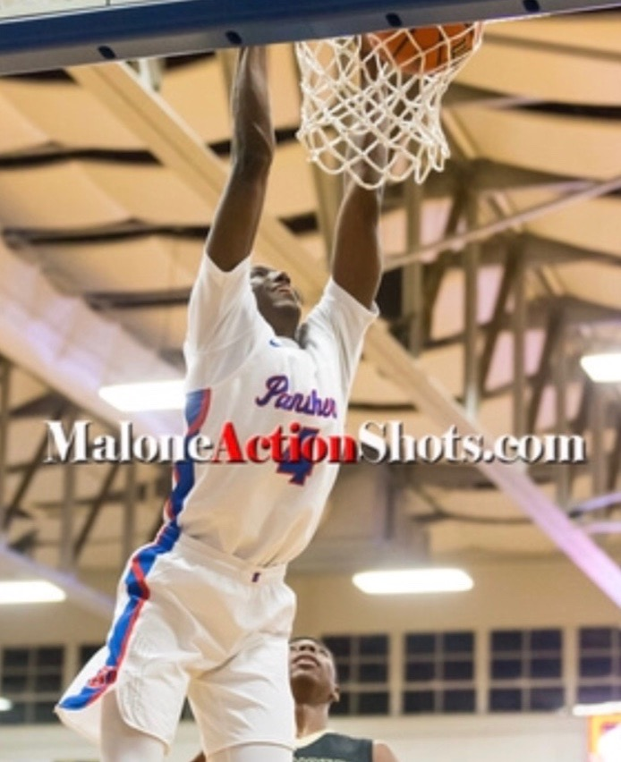

Hi. My name is Jalen "Jay" Cincore. I am seventeen years old with two sisters. My sister Jasmine plays for the University of Nebraska, and my other sister Shaquanda works here in Memphis. I play basketball for Bartlett High School, and also play in the summer as well. When I grow up, I want to be a computer programmer, college and a professional basketball player. I am currently in a Web Design Foundations course taught by Mrs. Katie Sinclair. I am usually a quiet guy who doesn’t say much to others, but I do interact with a lot people. I am athletic, smart, sometimes lazy, and caring person. My favorite food is cheese pizza and my mother’s macaroni and cheese. My favorite pizza place is Blaze Pizza in Nebraska. I have been a die-hard Oklahoma City Thunder basketball since I was eleven. I am very active on social media as well. I’m just a nice guy with many aspirations and ambitions for life.
At Bartlett High School basketball practice.
Dunk vs. Millington High School.